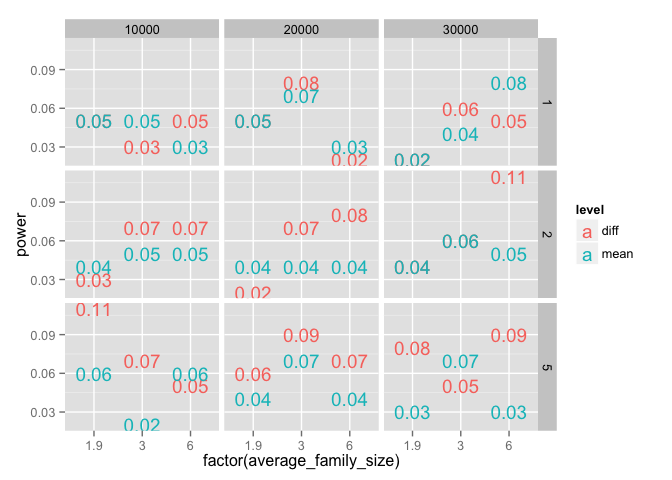
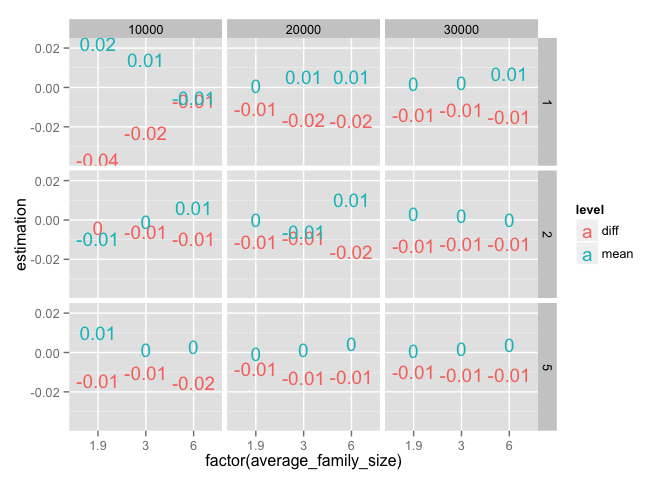

# bsub -q mpi -W 48:00 -n 1 Rscript -e "setwd('/usr/users/rarslan/'); filebase = '0_simulate_cycle'; knitr::knit(input = paste0(filebase,'.Rmd'), output = paste0(filebase,'.md'));cat(readLines(paste0(filebase,'.md')), sep = '\n')"
library(data.table); library(ggplot2); library(psych); library(reshape2);library(plyr); library(dplyr); library(lme4); library(lmerTest)simulate_fitness = function(
### settings
nr_of_people = 2e4,
average_family_size = 5,
IBI = 3,
effects = list(
family_intercept = 15,
SES = 1,
sibship_size = -0.1,
cohort = 0.1,
patage = -0.1,
patage_on_ses = 0.2,
noise = 5
)
) {
library(data.table); library(dplyr)
#### simulate families
nr_of_families = round(nr_of_people/average_family_size)
# sum(rpois(nr_of_families, lambda = average_family_size)) # ~number of individuals
individuals_in_family = 1+rpois(nr_of_families, lambda = average_family_size-1) # families need at least one member
families = data.table(
family = 1:nr_of_families,
family_intercept = rnorm(nr_of_families),
sibship_size = individuals_in_family,
year_of_first_birth = 20 * runif(nr_of_families) + 1950,
paternal_age_at_first_birth = 7 * rnorm(nr_of_families) + 35
)
families$SES = 0.7 * rnorm(nr_of_families) + effects$sibship_size * families$sibship_size + effects$patage_on_ses * ((families$paternal_age_at_first_birth-35)/10) # family wealth is function of sibship size and paternal age
#### simulate people
people = data.table(
person = 1:nr_of_people,
family = rep(x = 1:nr_of_families, times = individuals_in_family, length.out = nr_of_people),
male = round(runif(nr_of_people))
)
people = merge(people, families, by = 'family')
# 30 seconds vs 8
# people = people %>% group_by(family) %>% mutate(
# birth_order = row_number(person),
# birth_year = year_of_first_birth + (birth_order - 1) * (1 + rpois(1, lambda = IBI - 1)),
# paternal_age = paternal_age_at_first_birth + birth_year - year_of_first_birth,
# paternal_age_mean = mean(paternal_age)
# )
people[, birth_order := ave(1:nrow(people), family,FUN = seq_along)]
people[, birth_year := NA_real_ ]
people[, birth_year :=
year_of_first_birth + (birth_order - 1) * (1 + rpois(1, lambda = IBI - 1)), by = family]
# we used a bit odd method to simulate families with systematic differences in paternal ages
people[, paternal_age := paternal_age_at_first_birth + birth_year - year_of_first_birth]
people[, paternal_age_mean := ave(paternal_age, family,FUN = mean)]
people[, fitness :=
effects$family_intercept * family_intercept + # unsystematic family effect
effects$SES * SES + # unobs level 2 confound, pos. correlated with average pat age
effects$cohort * (birth_year-1950)/10 + # Flynn effect
effects$patage * (paternal_age-35)/10 # paternal age effect
]
people[, fitness_m := fitness + effects$noise * rnorm(nrow(people))]
people
}
sumfun_fixed <- function(fit) {
aa = as.data.frame(coef(summary(fit)))
aa$var = rownames(aa)
bb = as.data.frame(confint(fit,method="Wald"))
bb$var = rownames(bb)
aa = merge(aa, bb, by = "var")
aa
}
fitfun = function(data) {
library(lme4); library(lmerTest)
lmer(fitness_m ~ paternal_age_mean + paternal_age + birth_year + sibship_size + (1 | family), data = data)
}
fitfunction = function(data) {
library(formr); library(reshape2)
coefs = sumfun_fixed(fitfun(data))
dcast(melt(coefs[coefs$var %contains% "paternal",c("var","Estimate","Pr(>|t|)")],id="var"), formula = . ~ variable+ var)[,2:5]
}from within family to between
fitfunction(simulate_fitness(nr_of_people = 2e5, average_family_size = 1.9))## Estimate_paternal_age Estimate_paternal_age_mean Pr(>|t|)_paternal_age
## 1 -0.016 0.025 0.13
## Pr(>|t|)_paternal_age_mean
## 1 0.05fitfunction(simulate_fitness(nr_of_people = 2e5, average_family_size = 2))## Estimate_paternal_age Estimate_paternal_age_mean Pr(>|t|)_paternal_age
## 1 -0.0093 0.0085 0.39
## Pr(>|t|)_paternal_age_mean
## 1 0.51fitfunction(simulate_fitness(nr_of_people = 2e5, average_family_size = 3))## Estimate_paternal_age Estimate_paternal_age_mean Pr(>|t|)_paternal_age
## 1 0.0027 0.0023 0.8
## Pr(>|t|)_paternal_age_mean
## 1 0.86fitfunction(simulate_fitness(nr_of_people = 2e5, average_family_size = 5))## Estimate_paternal_age Estimate_paternal_age_mean Pr(>|t|)_paternal_age
## 1 -0.025 0.031 0.042
## Pr(>|t|)_paternal_age_mean
## 1 0.034if(!file.exists('lme4_sims.Rdata')) {
sample_people = c(1e4,2e4,3e4)
average_family_size = c(1.9,3,6)
IBI = c(1,2,5)
patage = c(-0.1,-0.2,0)
patage_on_ses = c(0.2,0)
res0 <- fitfunction(simulate_fitness())
nrep <- 100
resarr <- array(dim = c(
length(sample_people),
length(average_family_size),
length(IBI),
length(patage),
length(patage_on_ses),
nrep,
length(res0)
), dimnames = list(
sample_size = sample_people,
average_family_size = average_family_size,
IBI = IBI,
patage = patage,
patage_on_ses = patage_on_ses,
rep = seq(nrep),
var = names(res0)
)
)
time_took = system.time({ res0 <- fitfun(simulate_fitness(nr_of_people = 30)) })
# time_calc
as.vector(time_took[3]) * length(resarr)/length(res0) / 60 / 60 # hours for the whole results array
## prefer to use i,j,k,... for indices
for (i in seq_along(sample_people)) {
for (j in seq_along(average_family_size)) {
for (k in seq_along(IBI)) {
for (l in seq_along(patage)) {
for (m in seq_along(patage_on_ses)) {
## if you want to see progress in the output file
cat(i,j,k,l,m,"\n")
for(n in 1:nrep) {
resarr[i,j,k,l,m,n,] <- unlist(fitfunction(simulate_fitness(
nr_of_people = sample_people[i],
average_family_size = average_family_size[j],
IBI = IBI[k],
effects = list(
family_intercept = 15,
SES = 1,
sibship_size = -0.1,
cohort = 0.1,
patage = patage[l],
patage_on_ses = patage_on_ses[m],
noise = 5
)
)))
}
## checkpointing
## decide whether you want this in the innermost or next-
## or next-next ... probably don't need to save more than once every
## 10 minutes or so unless you're really impatient and want
## to look at interim results in an independent R session
}
}
save(resarr,file="lme4_sims.RData")
}
}
}
save(resarr,file="lme4_sims.RData")
} else {
load("lme4_sims.Rdata")
}resdf = melt(resarr)
resdf = dcast(resdf,formula = sample_size + average_family_size + IBI + patage + patage_on_ses + rep ~ var)
resdf$pval_mean = resdf$`Pr(>|t|)_paternal_age_mean`
resdf$pval_diff = resdf$`Pr(>|t|)_paternal_age`
resdf2 = na.omit(data.table(resdf))power_all = resdf2 %>%
group_by(sample_size, average_family_size, IBI, patage, patage_on_ses) %>%
summarise(
power_mean = mean(pval_mean < 0.05, na.rm = TRUE),
power_diff = mean(pval_diff < 0.05, na.rm = TRUE),
estimation_mean = mean(Estimate_paternal_age_mean, na.rm=T),
estimation_diff = mean(Estimate_paternal_age, na.rm=T)
)power_famsize = resdf2 %>%
filter(patage == -0.1, patage_on_ses == 0) %>%
group_by(sample_size, average_family_size, IBI) %>%
summarise(
power_mean = mean(pval_mean < 0.05, na.rm = TRUE),
power_diff = mean(pval_diff < 0.05, na.rm = TRUE),
estimation_mean = mean(Estimate_paternal_age_mean, na.rm=T),
estimation_diff = mean(Estimate_paternal_age, na.rm=T)
) %>%
melt(id=c("sample_size","average_family_size","IBI")) %>%
mutate(
variable = as.character(variable),
level = str_split_fixed(variable,pattern = "_",n = 2)[,2],
variable = str_split_fixed(variable,pattern = "_",n = 2)[,1]) %>%
dcast(formula = ... ~ variable, fun.aggregate = mean)
qplot(x = factor(average_family_size), y = power,colour = level, label = round(power,2), geom = "text", data = power_famsize) + facet_grid(IBI ~ sample_size)
qplot(x = factor(average_family_size), y = estimation,colour = level, label = round(estimation,2), geom = "text", data = power_famsize) + facet_grid(IBI ~ sample_size)